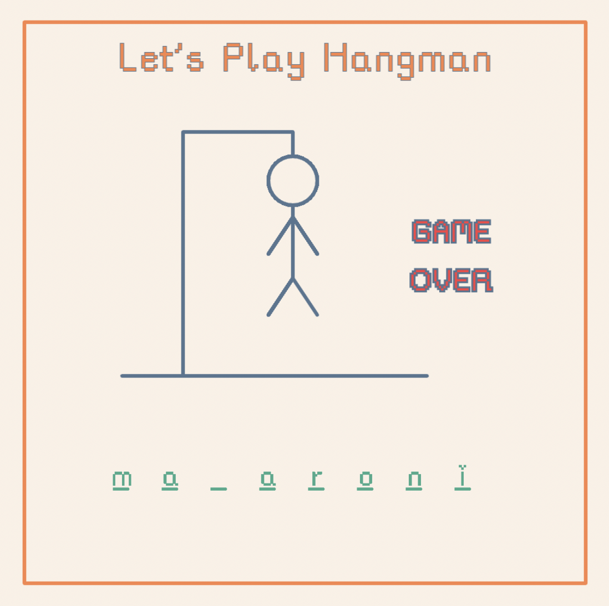

<!DOCTYPE html>
<html lang="en">
    <meta charset="utf-8" />
    <meta name="viewport" content="width=device-width, initial-scale=1" />
</html>

<head>
    <title>Audrey Vo | Work</title>
    <link rel="stylesheet" href="./style.css" />
    <link
      href="https://fonts.googleapis.com/icon?family=Material+Symbols+Rounded"
      rel="stylesheet"
    />
    <script>
    function toggleMenu() {
        const el = document.getElementById('main-nav')
        el.classList.toggle('open')
    }
    </script>
</head>

<body>
    <nav class="main-menu">
        <a href="home.html"></a>
        <span class="mobile-menu" onclick="toggleMenu()">
            <!-- case sensitive USE ALL LOWERCASE -->
            <span class="material-symbols-rounded">menu</span>
        </span>

        <ul class="main-nav" id="main-nav">
            <li class="home-nav"><a href="./home.html">Home</a></li>
            <li><a href="./work2.html" class="active">Work</a></li>
            <li><a href="./aboutme.html">About</a></li>
            <li><a href="./contact.html">Contact</a></li>
        </ul>
    </nav>
    <div class="work-page-wrapper">
        <nav id="project-side-nav">
            <ul>
                <li><a href="#ux-projects">UX/UI</a><span class="material-symbols-rounded">navigate_next</span></li>
                <li><a href="#coding-projects">Coding</a><span class="material-symbols-rounded">navigate_next</span></li>
                <li><a href="#art-projects">Design/Art</a><span class="material-symbols-rounded">navigate_next</span></li>
            </ul>
        </nav>
        <div class="work-wo-nav">
            <section id="ux-projects" class="section">
                <h2>UX Projects</h2>
                <div class="project-container">
                    <div class="project-image-wrapper">
                        
                    </div>
                    <div class="project-description">
                        <h3>Showcasing NYU's Political Zeitgeist</h3>
                        <p>A redesign of an dynamic campus editorial website at NYU called <span class="italics">In the Zeitgeist</span>. 
                            Sought to modernize the interface and better demonstrate hierarchy to promote understanding and readership among users.
                            Also responsible for its subsequent development.</p>
                            <a href="./zeitgeist-project.html"><button>see more<span class="material-symbols-rounded">navigate_next</span></button></a>
                        </div>
                </div>
                <div class="project-container">
                    <div class="project-image-wrapper">
                        
                    </div>
                    <div class="project-description">
                        <h3>TaskBuddy: Helping Students Stay Organized</h3>
                        <p>A concept for a task management app for college students that focuses on organization and usability.</p>
                        <a href="#"><button>see more<span class="material-symbols-rounded">navigate_next</span></button></a>
                    </div>
                </div>
            </section>
            <section id="coding-projects" class="section">
                <h2>Coding Projects</h2>
                <div class="project-container">
                    <div class="project-image-wrapper">
                        
                    </div>
                    <div class="project-description">
                        <h3>Game of Hangman</h3>
                        <p>Non facere obcaecati est quod quaerat et placeat fugit et consequatur odio et quaerat 
                            assumenda eum quod voluptatem et reprehenderit doloribus. Sit odit consequatur aut voluptas.</p>
                    </div>
                </div>
            </section>
            <section id="art-projects" class="section">
                <h2>Art and Design</h2>
                <div id="art-gallery-wrapper">
                    <div class="medium-art">
                        
                        <p>Plein air study at Villa Fabbricotti, May 2022.</p>
                    </div>
                    <div class="medium-art">
                        
                        <p>Plein air study at Limonaia di Villa Strozzi, May 2022.</p>
                    </div>
                    <div class="small-art">
                        
                        <p>Color study in gray, March 2022.</p>
                    </div>
                    <div class="small-art">
                        
                        <p>Color study in blue, February 2022.</p>
                    </div>
                    <div class="small-art">
                        
                        <p>Color study in white, February 2022.</p>
                    </div>
                    <div class="small-art">
                        
                        <p>Figure drawing,</p>
                    </div>
                    <div class="small-art">
                        
                        <p>Figure drawing,</p>
                    </div>
                </div>
            </section>
        </div>
    </div>

    <footer class="audrey-footer">
        <p>2023 © audrey vo ˘ᵕ˘</p>
        <p>Built by Audrey Vo</p>
    </footer>

    <script>
        document.addEventListener("DOMContentLoaded", function () {
          var sideNav = document.getElementById("project-side-nav");
          var sections = document.querySelectorAll(".section");
      
          function updateNavigation() {
            var fromTop = window.scrollY;
            var closestSection = null;
      
            sections.forEach(function (section) {
              var sectionTop = section.offsetTop - 200; // Adjusted offset
      
              if (sectionTop <= fromTop && (!closestSection || sectionTop > closestSection.offsetTop - 200)) {
                closestSection = section;
              }
            });
      
            // Hide all icons
            sideNav.querySelectorAll("li .material-symbols-rounded").forEach(function (icon) {
              icon.style.visibility = "hidden";
            });
      
            // Show the icon for the closest section
            if (closestSection) {
              var index = Array.from(sections).indexOf(closestSection);
              var navItem = sideNav.querySelectorAll("li")[index];
              var materialIcon = navItem.querySelector(".material-symbols-rounded");
              materialIcon.style.visibility = "visible";
            }
          }
      
          window.addEventListener("scroll", updateNavigation);
          updateNavigation(); // Call the function once to set initial visibility
      
          // Debugging information
          console.log("Script loaded successfully");
          console.log("Number of sections:", sections.length);
          console.log("Sections:", sections);
        });
      </script>
</body>